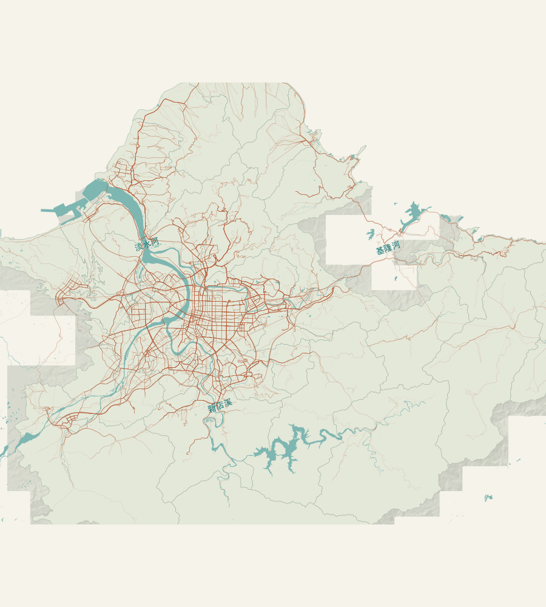

路線編號 · 文章 4.1
同家族保留資訊，連號未必行經相近。
檢驗號碼差與路線距離是否一起增減，377 條純數字路線的等級相關為 0.0248，接近零。號碼越接近，並沒有穩定對應到越相近的行經位置。
另一項比較按百位與名稱區分編號家族：510 條母路線中，控制路線位置與長度後，幾何近鄰仍多出 5.75 個百分點的同家族比例。家族分類與數字大小因此提供不同資訊；母路線指一條命名服務，去回程在此合併比較。
閱讀編號檢驗 · 查看比較圖與數據從熟悉的公車，看見生活的距離。
家附近有站牌，出門卻還是不方便？這份研究結合雙北公車、住宅與捷運資料，分析路線之間的關係，以及住宅位置、道路與入口如何影響到站距離。
研究發現：在 6,047 格可比住宅格網中，509 格的較遠住宅到站距離（第 90 百分位）按直線未超過 500 公尺，沿道路計算卻超過。查詢住宅繞行地區與里名 →

研究發現 · 對照文章第四節
研究結論來自全體路線與住宅格網的比較。下列五項發現依序連到原文、圖表及可查詢的位置；地圖則保留去回程與支線，供進一步查看。
路線編號 · 文章 4.1
檢驗號碼差與路線距離是否一起增減，377 條純數字路線的等級相關為 0.0248，接近零。號碼越接近，並沒有穩定對應到越相近的行經位置。
另一項比較按百位與名稱區分編號家族：510 條母路線中，控制路線位置與長度後，幾何近鄰仍多出 5.75 個百分點的同家族比例。家族分類與數字大小因此提供不同資訊；母路線指一條命名服務，去回程在此合併比較。
閱讀編號檢驗 · 查看比較圖與數據降維表示 · 文章 4.2
降維圖保留一部分相近路線，但會改變原有鄰居關係。全圖兩軸沒有通過共同地理方向的命名條件；選點後仍應回地圖核對行經位置與站點。
在同一組 1,051 條母路線中，比較原始距離與二維圖找出的近鄰清單，使用考慮鄰居權重的 Jaccard 相似度。0 表示沒有重疊、1 表示完全一致；幾何為 0.5329，共站為 0.3571。這是兩份近鄰清單的重疊程度，不是地圖正確率，也不能和不同樣本的模型指標混用。
住宅到站 · 文章 4.3
在邊長 250 公尺的格網內，把住宅取樣位置由近到遠排列，累加住宅面積權重，第一次涵蓋 90% 時的距離稱為第 90 百分位。它描述較遠住宅的到站負擔，並非九成居民的實測距離。
6,047 格完整可比住宅格網中，509 格的直線第 90 百分位未超過 500 公尺，沿道路計算卻超過；全部 6,047 格的兩種距離差值中位數為 94.85 公尺。另有 91 格平均未超過門檻，第 90 百分位卻超過。先核實住宅出口、過街與站位，才能判斷需要何種改善。
查詢 509 格的區里與位置 · 閱讀住宅比較人口與涵蓋 · 文章 4.4
在住宅面積取樣的範圍內，將步行資料未知的位置分別視為未超過或超過 500 公尺，可得已知配置人口權重的比例界限：1.56%–2.67%。這是固定人口配置下的不確定範圍，不是全體雙北居民的實測比例。
另有 2,411 格人口來源不完整，未納入上述比例。里名只提供位置線索；格網人口是依面積配置的估計，不能當作官方里人口。比較行政區時，候選格數與完整可比格數應一起讀取。
閱讀未知範圍與人口結果 · 查看分布與界限營運條件 · 文章 4.5
班距是前後兩班車抵達的時間差；變異係數 CV 是標準差除以平均值，用來衡量班距波動。在平均班距 10 分鐘、乘客獨立隨機到站且能搭上第一班的條件下，CV 從 1 降至 0，模型平均候車從 10 分鐘降至 5 分鐘；保持 CV = 1 而增班 20%，則降至約 8.33 分鐘。
這項條件比較支持把班次、規律性與車上時間分開評估，尚不能判定哪種措施更划算。後續應以相同成本、相同住宅與目的地，比較整段旅程的時間改善。
重現本文的候車比較 · 查看 54 組條件 · 政策意涵01 / 兩張圖，一條路線
先搜尋一條熟悉的公車。地圖顯示它經過哪裡，
降維圖協助比較行經位置或服務站點相近的路線。
這張圖保留了多少路線關係？
載入地理脈絡…
© OpenStreetMap contributors · 內政部／國土測繪中心 · 雙北開放資料。來源與版本
你會看到它的起訖站、經緯度和行進方向，也能接著查看最相似的其他路線。
GIS / 位置與人口
選行政區、搜尋里名，或點一下地圖。資訊卡呈現所在區里、人口估計及本格取樣位置的到站距離分布。距離不以滑鼠點下的位置重新計算；若屬於研究辨認的 509 格，會並列文章採用的直線、路網距離與差值。
模型原始／展示座標可在上圖切換。地圖上的北向是地理方向。降維圖的 Z1、Z2 是第一、第二個模型座標，不能直接當作東西、南北。UMAP 與擴散映射沒有距離單位；幾何 MDS 原始座標以公尺為尺度，但不是地理位置。對齊展示另經旋轉、縮放，圖上距離不可直接換成步行距離。座標、單位與對齊方法。MDS 只計算固定 500 個幾何代表，其餘沒有座標的路線不補點。
路線地理座標 CSV · 分析精度路線幾何 · 方向診斷 JSON02 / 回到街廓
全體比較先界定差異的量級，以下地點再說明住宅位置、河川與轉乘設施的作用。這些案例用來核對空間機制，不能代表全市發生率。
住宅全體比較 · 人口與空間機制的結果
03 / 時間與流動
白天人在哪裡？車來得多不多？上車後快不快？
人口存量、運輸供給與旅行時間，反映不同的服務條件。
活動人口只到行政區尺度。日間有兩份相同統計期但數值不同的來源，並列保留，未納入當期缺口排名。
選取的行政區同步呈現兩來源；沒有里級或網格逐時實測人口。2026 年 7 月共有 63,379,613 旅次。起訖旅次資料（Origin–Destination，OD）記錄從哪一站進站、在哪一站出站。以下依來源的時段代碼比較起站端分布；代碼的鐘點邊界及按進站或出站時間歸組，尚未確認。來源與彙整定義
圖為已對照站名的起站端旅次量除以實際觀測日數，單位為旅次／日；不代表同一鐘點的出閘人流。缺少的代碼 2 至 4 未補零。每日分布與站間方向結果。同一速度可以有不同班次；班次再密，也不能由此推定載客量。本文另以 q 表示固定路段斷面的車輛通過率，與 qboard 的乘客上車率分開計算。頻率、速度、車流與乘客流的定義。
現有公車紀錄未形成連續到離站事件，因此尚不能估計各路線的實際班距變異與完整旅行時間。下方以明示條件比較營運機制，不能視為實施成效。
查看班距與候車試算班距是前後兩班車抵達的時間差。假設步行 8 分鐘、班距固定 10 分鐘、車上 20 分鐘，乘客獨立隨機到站且能搭上下一班，平均候車為 5 分鐘，合計 33 分鐘。班距的變異係數（CV）是標準差除以平均；數字越大表示同一平均下波動越大。
文章的比較從不規律班距出發：平均班距 10 分鐘、CV = 1 時，平均候車 10 分鐘；保持平均班距但令 CV = 0，候車降為 5 分鐘；保持 CV = 1 而增班 20%，候車約為 8.33 分鐘。三者另加相同的步行與車上時間。選單會列出每一條件的平均班距、CV 與候車時間，避免混用不同基線。
個案的車上與候車時間資料不足，尚無法估計完整旅程的改善幅度。捷運步行情境只呈現步行分量，不能套用到不經捷運的路徑。
查看 54 組條件比較 ↗ · 候車公式與適用條件04 / 研究文章
站牌密度不足以代表到站方便。研究辨認住宅繞行的位置，檢驗路線編號的地理資訊，並區分改善步行、增班與提高到站規律性的作用。
閱讀結論與政策意涵 · 查看 509 格調查清冊
來源、授權與研究版本
網站公開分析結果、方法說明及必要衍生圖資；分析程式與原始快照保留於研究工作區。地圖展示幾何有簡化，下載路線保留分析精度。地形發布版次不等於全部地區的測繪年份。
完整來源清單 · 各捷運系統的資料範圍